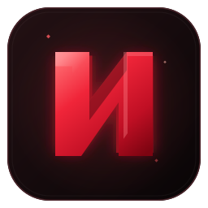
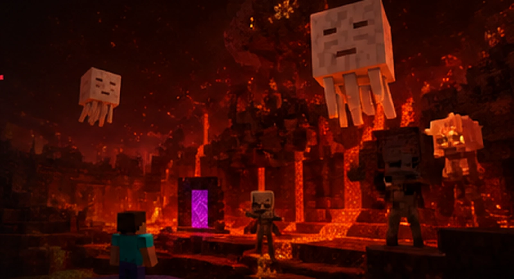
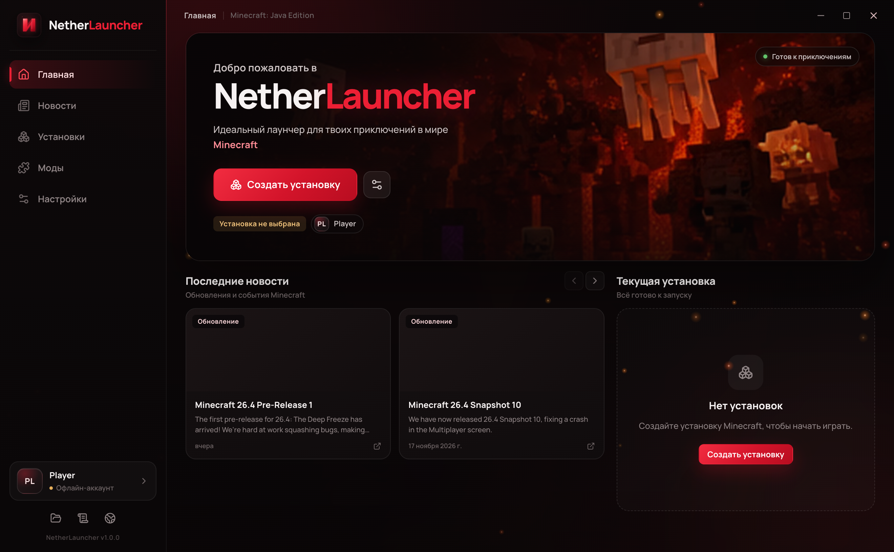
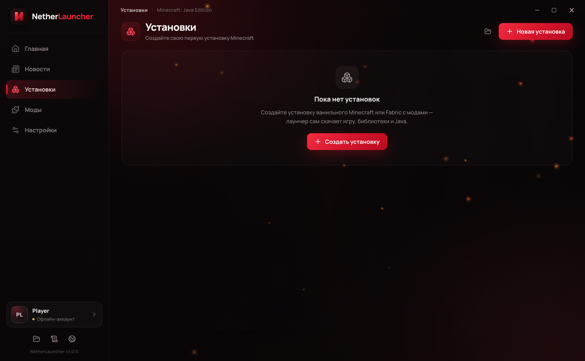
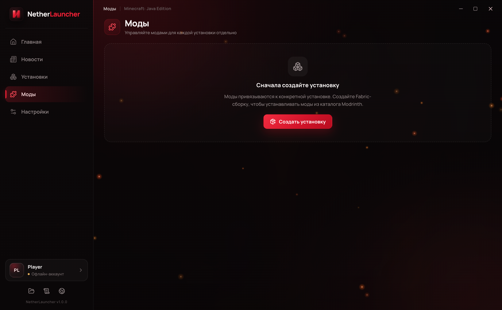

Отдельные установки
Разделяй версии, настройки и игровые профили. Каждому миру — своё место.

NetherLauncher Скачать лаунчерMinecraft: Java Edition
Один лаунчер для новых миров, любимых сборок и всего, что ты захочешь построить.

Меньше настроек.
Больше игры.
Создавай отдельные установки, переключай версии и собирай свой идеальный Minecraft — без лишних сложностей.
От первого запуска до собственной модифицированной сборки.
Разделяй версии, настройки и игровые профили. Каждому миру — своё место.
Выбирай Vanilla, Fabric, Forge или NeoForge при создании установки Minecraft.
Выбирай версии для модов, ресурспаков, шейдеров и сборок, а также настраивай Java и память.
Посмотри, как устроен NetherLauncher.



NetherLauncher 1.4.0 уже доступен для Windows x64 и Mac с Apple Silicon. Имя лаунчера и офлайн-ник Minecraft настраиваются отдельно.
Версия 1.4.0. Портативная, не требует установки.
Скачать для WindowsNetherLauncher-1.4.0-win-x64.exe
Файл не подписан — Windows может показать предупреждение SmartScreen.
Версия 1.4.0. DMG-образ для Mac с чипом Apple Silicon.
Скачать для macOSNetherLauncher-1.4.0-arm64.dmg
Не для Intel Mac. Приложение не подписано и не нотарифицировано Apple.
Для входа в лицензионный аккаунт Minecraft потребуется настроить Microsoft Client ID в лаунчере.